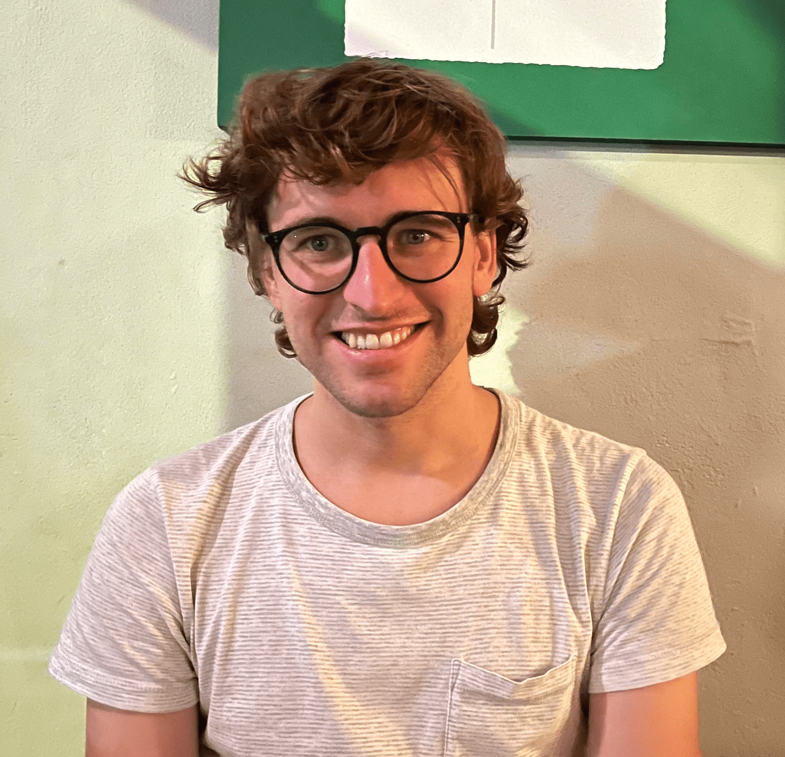

postdoctoral researcher
Computing and Mathematical Sciences
Caltech
Annenberg 203, Caltech
Pasadena, CA, USA
I am a postdoctoral researcher in the department of Computing and Mathematical Sciences at Caltech, hosted by Prof. Adam Wierman, Prof. Eric Mazumdar, and Prof. Steven Low.
Previously, I was a PhD Student at the Automatic Control Laboratory at ETH Zürich under the supervision of Prof. Florian Dörfler (main advisor) and Prof. Alessio Figalli (second advisor). I was part of NCCR Automation. I received my BSc. and MSc. from ETH Zürich in 2016 and 2019, respectively. During my studies, I visited the Massachusetts Institute of Technology and wrote my Master's thesis at Stanford University, in Prof. Marco Pavone's Autonomous Systems Lab. In summer 2024, I was an intern in quantitative research at Citadel GQS.
My current research interests include decision-making under uncertainty, game theory, and optimal transport, with applications in autonomy, energy, and biology.
| March 2026 | Together with Riccardo Bonalli and Thomas Lew, I am co-orgaizing a workshop on uncertainty-aware control at ECC 2026. Join us in Reykjavík in July! |
|---|---|
| March 2026 | How to optimally steer a distribution with only a few controllable agents? Check out our new preprint. |
| February 2026 | In our new preprint, we use strategic risk aversion/robustness to train AI agents in collaborative multi-agent settings. |
| February 2026 | I received the SAND Award at the Information Theory and Applications Workshop. |
| January 2026 | Our paper the identification of gradient-flow SDEs was accepted at AISTATS 2026. |
| January 2026 | Our paper on hedging against black swans in day-ahead energy markets using distributionally robust optimization was accepted at PSCC 2026. |
| October 2025 | I was selected as one of the NeurIPS top reviewers! |
| October 2025 | New preprint on hedging against black swans in day-ahead energy markets, using distributionally robust optimization. |
| October 2025 | I have started my postdoc at Caltech! |
| August 2025 | I successfully defended my PhD! |
| July 2025 | New preprint on strategically robust game theory. In multi-agent decision-making settings, how can agents be robust to one another's strategies? |
| February 2025 | Our paper Distributional Uncertainty Propagation via Optimal Transport has been accepted for publication in the IEEE Transactions on Automatic Control. |